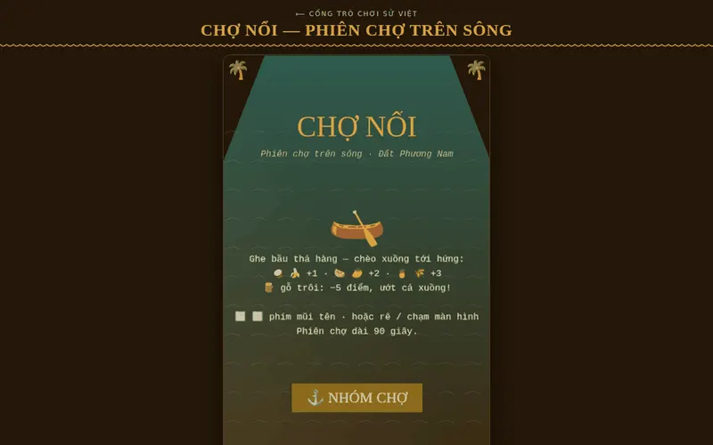

Trò chơi nhanh tay · 90 giây
Chợ Nổi
Phiên Chợ Trên SôngThời khẩn hoang Đất Phương Nam, ghe xuồng tụ giữa sông thành chợ nổi. Ghe bầu chạy ngang thả nông sản; bạn chèo xuồng ba lá hứng cho đầy khoang, né gỗ trôi, trước khi tan chợ.
Chơi ngay- Thể loại
- Nhanh tay, phản xạ
- Bối cảnh
- Đồng bằng sông Cửu Long, thế kỷ 19
- Thiết bị
- Điện thoại, máy tính
- Một ván
- 90 giây, lưu kỷ lục
Ghe xuồng là chân đi
Thế kỷ 19, lưu dân người Việt theo kênh rạch tiến vào khẩn hoang đồng bằng sông Cửu Long. Đường bộ chưa mở, ghe xuồng là chân đi — người mua kẻ bán tụ lại giữa sông thành chợ nổi.
Mỗi ghe treo một cây bẹo trước mũi để người mua nhìn từ xa đã biết ghe bán gì: «treo hàng gì, bán hàng nấy».
Tính điểm
Hứng gì, được bao nhiêu
| Hàng rơi | Điểm |
|---|---|
| Dừa, chuối | +1 |
| Dưa hấu, xoài | +2 |
| Khóm, lúa | +3 |
| Gỗ trôi — phải né | −5, rung màn hình |
Chợ càng về trưa, ghe thả càng dặt dìu, hàng rơi càng nhanh.
Điều khiển
Cách chơi
Máy tính- ← →
- Chèo xuồng sang trái, sang phải
Rê hoặc chạm màn hình để chèo xuồng theo tay.
Kỷ lụcĐiểm cao nhất được lưu ngay trong trình duyệt, không gửi đi đâu.
Ngắn gọn, hợp đầu giờ học
- Một ván 90 giâyVừa đủ làm hoạt động khởi động trước bài về khẩn hoang Nam Bộ hay văn hóa sông nước.
- Chạy trên máy yếuĐồ họa nhẹ, không cần tải ảnh; chơi được ngoại tuyến sau lần mở đầu.
- Âm nhạc ngũ cungÂm thanh theo thang ngũ cung, cùng chất nhạc với Vân Đồn và Bắc Hải Đảo.